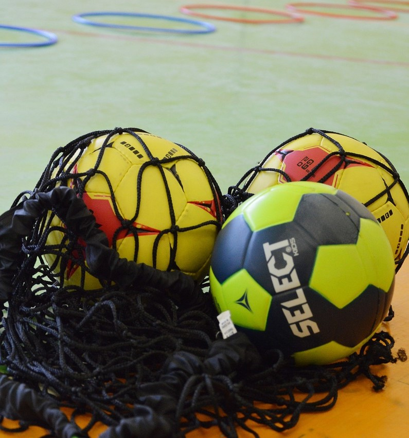

Taktik spielt im Handball eine entscheidende Rolle und kann den Unterschied zwischen Sieg und
Niederlage ausmachen. Jedes Team hat seine eigenen taktischen Ansätze und Strategien, um
erfolgreich zu sein. Im Folgenden werde ich einige wichtige taktische Aspekte im Handball
näher erläutern.
1. Angriffstaktik: Beim Angriff geht es darum, durch gute Spielzüge und Kombinationen Tore
zu erzielen. Eine gängige Angriffstaktik ist das Positionsangriffssystem, bei dem die
Spieler bestimmte Positionen auf dem Spielfeld einnehmen und versuchen, durch geschickte
Laufwege und Pässe Lücken in der gegnerischen Abwehr zu finden. Es gibt auch schnelle
Angriffssysteme, bei denen das Team versucht, schnell nach Ballgewinnen oder Abprallern zum
Torerfolg zu kommen. Die Wahl der Taktik hängt von der Spielstärke des Teams, den
individuellen Fähigkeiten der Spieler und der Spielentwicklung ab.
2. Abwehrtaktik: Die Abwehr hat die Aufgabe, die Angriffe des Gegners zu stoppen und
möglichst wenig Tore zuzulassen. Eine gebräuchliche Abwehrtaktik ist die 6:0-Abwehr, bei der
alle Abwehrspieler in einer Linie vor dem eigenen Tor stehen und die Angreifer blockieren.
Es gibt auch offensivere Abwehrformationen wie die 5:1- oder 3:2:1-Abwehr, bei denen ein
Spieler den Gegner frühzeitig stört und die anderen Spieler ihn unterstützen. Die Wahl der
Abwehrtaktik hängt von der Stärke des Gegners, den individuellen Fähigkeiten der Spieler und
den taktischen Vorgaben des Trainers ab.
3. Schnelles Umschaltspiel: Das schnelle Umschaltspiel ist eine wichtige taktische
Komponente im Handball. Nach Ballgewinnen versucht das Team, schnell vom Verteidigungs- zum
Angriffsmodus zu wechseln und den Ball schnell nach vorne zu bringen, um den Gegner zu
überraschen. Dies erfordert schnelle Entscheidungen, präzise Pässe und schnelles
Spielverständnis. Das schnelle Umschaltspiel kann sehr effektiv sein, um leichte Tore zu
erzielen, wenn die gegnerische Abwehr noch nicht organisiert ist.
4. Spielzüge: Spielzüge sind vordefinierte Abläufe, bei denen die Spieler bestimmte Laufwege
und Passkombinationen durchführen, um Torchancen zu kreieren. Spielzüge können im
Positionsangriff eingesetzt werden, um die gegnerische Abwehr auszuspielen und freie Räume
zu schaffen. Sie erfordern eine gute Kommunikation und ein eingespieltes Team, um
erfolgreich umgesetzt zu werden.
